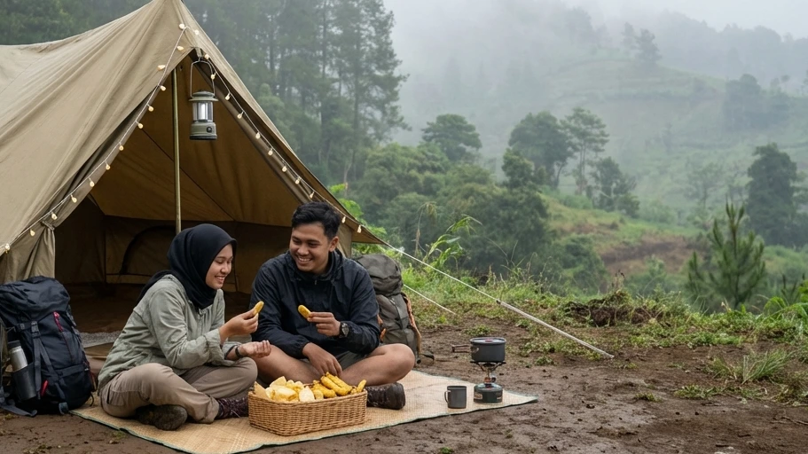

1. Mengapa Perlu Mengetahui Estimasi Harga Glamping?
Liburan ke alam terbuka kini bukan lagi monopoli para pendaki gunung atau pecinta alam garis keras. Transformasi industri pariwisata yang amat pesat telah melahirkan konsep Glamping (Glamorous Camping), sebuah gaya liburan yang menawarkan keseimbangan sempurna antara eksotisme keliaran alam dan kenyamanan fasilitas setara hotel berbintang. Namun, di balik segala kemewahannya, seringkali terbesit pertanyaan kritis di benak para calon wisatawan: "Berapa sebenarnya budget yang harus disiapkan?"
Melakukan pencarian seputar Estimasi Harga Glamping Terbaru: Panduan Menyiapkan Budget untuk Liburan Alam yang Nyaman adalah sebuah langkah finansial yang amat cerdas. Mengetahui rincian harga pasaran akan menyelamatkan Anda dari tagihan yang membengkak secara tiba-tiba (hidden fee) atau kekecewaan karena fasilitas yang didapat tidak sesuai dengan uang yang dikeluarkan. Melalui artikel panduan komprehensif ini, kita akan menguliti secara transparan berbagai rentang harga penyewaan glamping, mengidentifikasi biaya siluman yang kerap dilupakan, serta memberikan trik rahasia untuk mendapatkan pengalaman liburan alam bergaya mewah namun tetap sangat bersahabat bagi kantong keluarga Anda.
2. Memahami Konsep Glamping Sederhana vs Mewah
Sebelum kita berbicara soal angka dan rupiah, penting untuk menyamakan persepsi mengenai tingkatan atau level dari fasilitas glamping itu sendiri.
Apa itu Glamping Sederhana (Comfort Camping)?
Glamping sederhana, atau yang sering kami sebut sebagai Comfort Camping, merupakan sebuah titik tengah (sweet spot) bagi wisatawan yang mendambakan kemudahan tanpa ingin menghilangkan rasa otentik berkemah di alam. Pada kelas ini, Anda akan tetap tidur di dalam tenda dome gunung berspesifikasi tinggi (double layer tebal), namun seluruh tenda, matras empuk, dan kantong tidur (sleeping bag) telah didirikan secara utuh oleh pengelola (sistem All-In). Anda difasilitasi dengan listrik, lampu, serta toilet permanen duduk dengan kebersihan setara pom bensin VIP. Anda mendapatkan kepraktisan ala glamping, namun dengan sentuhan alam yang masih amat kental.
Apa itu Glamping Premium?
Di sisi spektrum yang lain, Glamping Premium menawarkan kemewahan yang absolut. Anda tidak lagi tidur di dalam tenda biasa, melainkan di dalam struktur membran raksasa, bangunan kayu berbentuk segitiga (cabin), atau tenda safari kanvas tebal yang di dalamnya terdapat kasur springbed King Size, pendingin ruangan (AC) atau pemanas (heater), *Smart TV*, jaringan Wi-Fi pribadi, dan kamar mandi dalam (en-suite bathroom) lengkap dengan *bathtub*. Tentu saja, privilese ini menuntut kompensasi finansial yang jauh lebih dalam.
BACA JUGA (Panduan Liburan):
3. Rincian Estimasi Harga Glamping Berdasarkan Fasilitas
Untuk memudahkan Anda menyusun rencana anggaran (budgeting) liburan akhir pekan ini, berikut adalah rincian estimasi tarif glamping yang saat ini berlaku di pasaran (khususnya di kawasan dataran tinggi seperti Batu Malang dan Puncak):
Kelas Budget (Ekonomis) - Mulai Rp 200.000 hingga Rp 400.000
Pada rentang harga ini, Anda sudah bisa menikmati layanan Comfort Camping paket lengkap. Biaya ini umumnya dipatok untuk sewa satu tenda dengan kapasitas 3 hingga 4 orang. Fasilitas yang Anda dapatkan meliputi tenda double layer yang sudah berdiri, matras isolator penahan dingin, sleeping bag wangi untuk setiap peserta, serta instalasi stop kontak listrik di teras tenda. Anda juga mendapatkan akses bebas ke toilet duduk permanen dan area api unggun (fire pit). Jika biaya ini dibagi rata per orang (split bill), Anda hanya mengeluarkan sekitar Rp 50.000 hingga Rp 100.000 saja per kepala per malamnya. Amat sangat murah dan hemat!
Kelas Menengah (Mid-Range) - Mulai Rp 500.000 hingga Rp 800.000
Masuk ke kelas menengah, tenda yang ditawarkan biasanya berukuran lebih masif (seperti tenda lonceng/bell tent dari bahan kanvas). Alas tidurnya tidak lagi menggunakan matras tipis, melainkan menggunakan kasur udara (air bed) atau kasur busa yang cukup tebal. Fasilitas tambahan biasanya mencakup layanan sarapan pagi sederhana (seperti nasi goreng atau roti lapis) yang diantarkan langsung ke depan tenda, serta dekorasi lampu interior yang amat estetik.
Kelas Premium (Mewah) - Di atas Rp 1.000.000
Jika Anda menyiapkan budget di atas 1 juta rupiah per malam (bahkan ada yang menembus 3 hingga 5 juta rupiah untuk *brand* ternama), Anda sedang menyewa sebuah kamar hotel berbintang yang dipindahkan ke tengah hutan. Fasilitasnya paripurna: lantai kayu (parket), kasur springbed kualitas premium, kamar mandi privat dengan fasilitas air panas (water heater), serta layanan kebersihan kamar harian. Kelas ini amat cocok untuk pasangan yang sedang melangsungkan bulan madu (honeymoon) eksklusif.

Bercengkerama bersama orang tercinta di bawah naungan pohon pinus tidak menuntut biaya selangit jika Anda cerdas memilih paket *Comfort Camping* (glamping ekonomis). (Dokumentasi: Batu Sunrise Camp)4. Komponen Biaya Ekstra yang Sering Terlupakan
Satu kesalahan fatal yang kerap dialami wisatawan saat menyusun anggaran glamping adalah hanya berfokus pada harga sewa kamar atau tendanya saja, tanpa memedulikan biaya variabel di sekitarnya.
Biaya Makanan dan Minuman (F&B)
Berada di pegunungan, hawa dingin akan memicu metabolisme tubuh bekerja ekstra keras yang membuat perut Anda terasa lebih cepat lapar. Jika Anda menginap di glamping mewah, harga makanan di restoran mereka biasanya dipatok jauh lebih tinggi dari harga normal di perkotaan. Jika Anda ingin berhemat, belilah paket Barbeque (BBQ) secara terpisah kepada admin pengelola, atau bawalah bahan masakan sendiri dari rumah beserta kompor gas portabel kecil untuk memasak mi instan kuah panas.
Biaya Transportasi dan Parkir Inap
Jangan lupakan bahan bakar kendaraan (bensin) yang dibutuhkan untuk mencapai lokasi dataran tinggi, serta biaya retribusi tiket masuk kawasan (jika area glamping berada di dalam area taman nasional hutan lindung). Selain itu, pastikan Anda mengonfirmasi kepada pihak pengelola apakah biaya parkir inap kendaraan selama Anda menginap sudah diikutsertakan (include) ke dalam tagihan, atau dikenakan tarif terpisah secara harian.
5. Tips Menghemat Budget Saat Memilih Tempat Glamping
Memiliki anggaran yang terbatas bukan berarti Anda kehilangan hak untuk menikmati liburan yang nyaman. Terapkan strategi berikut untuk mengakali pengeluaran Anda.
Lakukan Pemesanan di Hari Kerja (Weekdays)
Hukum *supply and demand* amat berlaku kuat di dunia pariwisata. Harga sewa glamping pada hari Jumat hingga Minggu (weekend), atau pada musim liburan nasional (high season), dapat melonjak hingga 50%. Jika memungkinkan, ambillah cuti dan jadwalkan liburan Anda di hari Selasa atau Rabu (weekdays). Selain mendapatkan harga *rate* terendah yang amat ramah kantong, Anda juga mendapatkan keuntungan berupa suasana *campground* yang amat sepi dan privat, jauh dari keramaian wisatawan lain.
Manfaatkan Promo Paket All-In (Tanpa Hidden Fee)
Hindari tempat yang menyewakan perintilan fasilitas secara terpisah (misalnya: tenda disewa terpisah, matras bayar lagi, pakai listrik bayar lagi). Carilah pengelola yang menyajikan harga secara transparan berupa Paket All-In. Sekali Anda mentransfer uang, maka seluruh fasilitas kelistrikan, alas tidur, hingga penggunaan toilet air bersih bisa Anda nikmati tanpa batas (*unlimited*).
BACA JUGA (Kenyamanan Berkemah):
6. Rekomendasi Comfort Camping Murah ala Glamping di Batu Malang
Untuk membuktikan bahwa sensasi kemewahan liburan alam bebas tidak selalu merampok isi dompet Anda, kami memiliki satu rekomendasi destinasi yang amat brilian.
Solusi Hemat di Batu Sunrise Camp
Jika Anda mencari Estimasi Harga Glamping Terbaru: Panduan Menyiapkan Budget untuk Liburan Alam yang Nyaman dan berharap menemukan destinasi dengan nilai ekonomis tertinggi (best value for money), maka Batu Sunrise Camp adalah jawaranya. Tempat ini mengusung konsep Comfort Camping yang memadukan keasrian camping sejati dengan utilitas kemudahan glamping.
Dengan *budget* merakyat kelas ekonomis (ratusan ribu saja untuk satu keluarga), Anda tidak perlu repot sama sekali. Pihak Batu Sunrise Camp telah menyewakan tenda gunung spesifikasi double layer tebal yang sudah berdiri amat kokoh. Di bagian dalamnya, matras empuk dan kantong tidur (sleeping bag) hangat yang wangi telah tertata rapi menyambut Anda. Anda juga akan mendapatkan kebebasan akses colokan listrik privat untuk mengisi daya ponsel, serta penggunaan blok toilet duduk (flushing) yang digaransi kebersihannya 24 jam penuh.
Puncak kemewahan gratis yang akan Anda dapatkan dari lokasi ini adalah panorama alamnya. Lahan parkir *campervan* yang tepat berada di samping tenda Anda mengarah langsung ke timur. Di malam hari Anda bisa memanggang sosis di teras sambil menatap lautan lampu kota (City Light), dan pada pagi buta, Anda disambut oleh mahakarya alam berupa matahari terbit keemasan (Golden Sunrise) yang menyibak awan putih tanpa perlu bersusah payah mendaki bukit manapun.
7. Kesimpulan
Menyusun anggaran liburan yang presisi adalah langkah awal yang krusial sebelum Anda mengemas ransel menuju pegunungan. Dari pemaparan komprehensif mengenai Estimasi Harga Glamping Terbaru: Panduan Menyiapkan Budget untuk Liburan Alam yang Nyaman di atas, kita dapat memetik kesimpulan bahwa ketenangan batin (*healing*) tidak melulu harus ditebus dengan biaya jutaan rupiah. Memilih konsep Comfort Camping yang dipelopori oleh pengelola cerdas seperti Batu Sunrise Camp memberikan Anda solusi *win-win*. Anda mendapatkan kemewahan berupa tidur nyenyak yang bebas rasa dingin, sanitasi toilet duduk yang steril, konektivitas listrik yang mumpuni, serta panorama *sunrise* yang tak tertandingi, namun dengan nominal biaya penyewaan yang amat bersahabat bagi kantong keluarga Anda. Jangan tunda kebahagiaan Anda, rencanakan *budget* Anda hari ini, dan nikmati serunya bermanja di pelukan alam Kota Batu!